广播
共 155 个月
3452 条广播
其中 2244 条带正文
广播发布后不可编辑，所以每条都是那一刻的原话。
2020-10-31 16:06:08
豆瓣原页
想玩 轩辕剑柒 軒轅劍柒
ps5见
2020-10-31 11:37:29
豆瓣原页
 看过 代码211 / 211 ★★☆☆☆
看过 代码211 / 211 ★★☆☆☆
什么剧情这。。。莫名其妙的开头，跟后面还没有联系，乱七八糟的故事。。。浪费时间。
2020-10-30 13:48:00
豆瓣原页
想看 玉响 第二季 / たまゆら 〜もあぐれっしぶ〜
不知道为什么没有看第二季
2020-10-28 20:46:42
豆瓣原页
 看过 关于莉莉周的一切 / リリイ·シュシュのすべて ★★★☆☆
看过 关于莉莉周的一切 / リリイ·シュシュのすべて ★★★☆☆
最开始是从几年前喜欢的纯音乐《Sight》找来，音乐没得说（+1星）。故事看着真糟心，皱着眉头看完。。。（2星）昨天还说想去日本常住，看了这个电影之后又不想了。。。不过久野好像上白石萌音啊。。。又说来岩井俊二在情书里面藤井树♂转校之后桌子上被同学放了花原来是死人的意思，难怪藤井树♀把花瓶摔了。
2020-10-27 20:02:23
豆瓣原页
看过 入殓师 / おくりびと ★★★★★
久石让的《18 Okuribito (Memory)》太好听了！剧情要是再长一些就好了啊~ 很好看，久违的催泪作品~ 爽！
2020-10-26 19:38:33
豆瓣原页
想看 人生果实 / 人生フルーツ
2020-10-26 19:34:00
豆瓣原页
想看 小森林 冬春篇 / リトル・フォレスト 冬・春
2020-10-26 19:15:41
豆瓣原页
看过 岁月神偷 / 歲月神偷 ★★★★★
看完才知道题目是什么意思，所有人被偷走的都是时间。其实仔细想想，可能好的医疗才是这世上最奢侈的东西。比如好的医疗可以让年老、超重的人两天内从covid19中恢复。上学的时候最奢侈的就是时间，浪费了好多。。。还好走上了比父母更好的道路。
2020-10-26 18:33:46
豆瓣原页
想看 入殓师 / おくりびと
2020-10-26 16:25:40
豆瓣原页
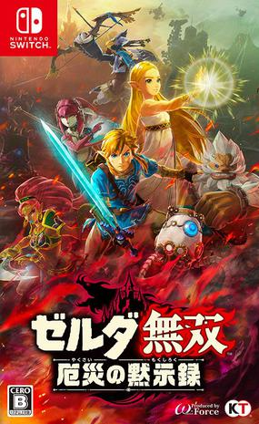
想玩 塞尔达无双 灾厄启示录 ゼルダ無双 厄災の黙示録
买游戏不玩貌似成了习惯？
2020-10-26 11:49:32
豆瓣原页
 想看 2001太空漫游 / 2001: A Space Odyssey
想看 2001太空漫游 / 2001: A Space Odyssey
2020-10-25 18:50:29
豆瓣原页
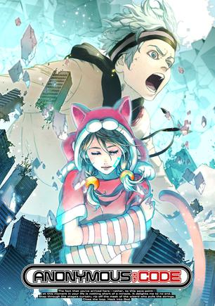
想玩 匿名代码 ANONYMOUS;CODE
2020-10-25 15:10:57
豆瓣原页
 想看 最后生还者 第一季 / The Last of Us Season 1
想看 最后生还者 第一季 / The Last of Us Season 1
2020-10-25 15:10:26
豆瓣原页
 想看 神秘海域 / Uncharted
想看 神秘海域 / Uncharted
2020-10-24 17:06:43
豆瓣原页
在玩 十三机兵防卫圈 十三機兵防衛圏
港服打折入了
2020-10-24 06:54:30
豆瓣原页
 在看 寒蝉鸣泣之时·业 / ひぐらしのなく頃に 業
在看 寒蝉鸣泣之时·业 / ひぐらしのなく頃に 業
物语画风的寒蝉重置
2020-10-19 11:22:50
豆瓣原页
 看过 硅谷 第六季 / Silicon Valley Season 6 ★★★★★
看过 硅谷 第六季 / Silicon Valley Season 6 ★★★★★
太可惜了，虽然故事逻辑是虚构的，其实放出来一个monster也还行🙄
2020-10-17 19:41:21
豆瓣原页
在看 硅谷 第六季 / Silicon Valley Season 6
2020-10-17 10:31:34
豆瓣原页
 在看 突击莉莉 / アサルトリリィ BOUQUET
在看 突击莉莉 / アサルトリリィ BOUQUET
竟然意外击中萌点啊
2020-10-17 09:51:59
豆瓣原页
想看 小林家的龙女仆S / 小林さんちのメイドラゴンS
2020-10-16 22:01:57
豆瓣原页
看过 西部世界 第三季 / Westworld Season 3 ★★★★★
很多cyberpunk的影子啊，期待42天后的2077。也有《血族》的影子，反正期待下一季
2020-10-15 07:18:19
豆瓣原页
在看 西部世界 第三季 / Westworld Season 3
Jesse也在里面 hhhh 感觉进入了演员循环
2020-10-14 20:49:59
豆瓣原页
 在玩 王国之心3 Kingdom Hearts III
在玩 王国之心3 Kingdom Hearts III
xgpu
2020-10-10 23:22:39
豆瓣原页
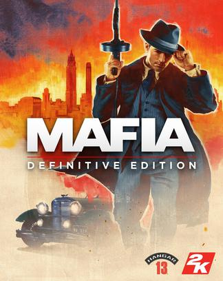
想玩 四海兄弟：最终版 Mafia: Definitive Edition
2020-10-08 05:46:23
豆瓣原页
想看 失控玩家 / Free Guy
爆米花电影
2020-10-04 13:45:31
豆瓣原页
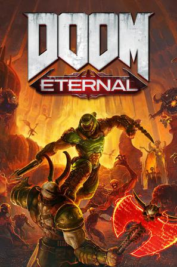
玩过 毁灭战士：永恒 DOOM Eternal ★★★★☆
XGPU 玩了下，感觉对于fps手残来说有点难，经常死😅 游戏做的都挺好，就是突突突太多了
2020-10-03 14:09:53
豆瓣原页
在玩 毁灭战士：永恒 DOOM Eternal
XGPU yes!
2020-10-02 21:20:49
豆瓣原页
 看过 三块广告牌 / Three Billboards Outside Ebbing, Missouri ★★★★☆
看过 三块广告牌 / Three Billboards Outside Ebbing, Missouri ★★★★☆
剧情自始至终一直在转折. 每个人都在变化, 或是成长、或是因为悲伤, 都有他的原因, 可以责备也可以理解.
2020-10-01 21:44:17
豆瓣原页
看过 《星际穿越》中的科学 / The Science of Interstellar ★★★★★
从小就想当宇航员的我, 因为初中近视彻底与它无缘了. 走出了国门才知道宇航员也是可以近视的, NASA很多宇航员都近视, 只是不能当掌舵的pilot而已, 仍然可以上太空完成飞行任务. 以后说不定还是有机会的. 这个纪录片再次让我对宇宙充满了好奇.
2020-10-01 18:21:42
豆瓣原页
想玩 以撒的结合：重生 The Binding of Isaac: Rebirth
2020-09-30 21:12:29
豆瓣原页
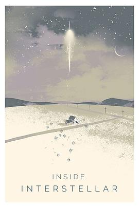
看过 走进《星际穿越》 / Inside ‘Interstellar’ ★★★★★
资源还挺难找. 看到了Nolan对拍摄电影的强迫症, 真的是太精彩了. 多年前第一次看interstellar完全没看懂啊, 想了一下当时自己跟弱智一样. 对于相对论、时空维度都没有较好的理解. 感觉这样的sci-fi给未来带来了无数可能.
2020-09-29 22:39:42
豆瓣原页
想看 密室逃生2 / Escape Room 2
2020-09-29 22:12:16
豆瓣原页
 看过 密室逃生 / Escape Room ★★★★☆
看过 密室逃生 / Escape Room ★★★★☆
设计还不错, 虽然有很多其他作品的影子. 感觉这种类型的片子就是不会告诉我为什么只有当事人在场的情况下会有第三者知道 =.=
2020-09-28 20:10:16
豆瓣原页
玩过 原神 ★★★☆☆
ps4版比手机版卡。。。还有这一个广场上的资源都没法加载完，在广场内走动还能看到建筑物消失。。。然后都0202年了还有隐形的门、捡物品要等1s这种设定。。另外是真的氪+肝。。
2020-09-28 09:09:19
豆瓣原页
想看 《星际穿越》中的科学 / The Science of Interstellar
2020-09-27 18:42:55
豆瓣原页
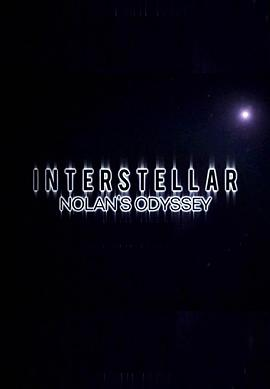
看过 星际穿越：诺兰的奥德赛 / Interstellar: Nolan’s Odyssey ★★★★☆
厉害厉害, 竟然没有用多少CGI, 直接实景搭建… Nolan说他的习惯是专注与剧情, 拍摄和展现手法交给director去一起讨论. 另外, 演员都是也都发现了Nolan的电影节奏特别快, 观众都没什么时间吃爆米花
2020-09-27 18:14:27
豆瓣原页
看过 续命之徒：绝命毒师电影 / El Camino: A Breaking Bad Movie ★★★★★
情怀5星, 是个可以接受的结局. Pinkman估计回去上个大学, 过一个平凡的生活了. Not many of us get a chance to start fresh. Good luck, Mr.Driscoll. 不得不感慨岁月是把杀猪刀, 10年前的美少女 Krysten 现在也不耐看了 hhh
2020-09-26 17:05:36
豆瓣原页
想看 失眠症 / Insomnia
2020-09-26 00:00:54
豆瓣原页
想看 走进《星际穿越》 / Inside ‘Interstellar’
2020-09-26 00:00:50
豆瓣原页
想看 星际穿越：诺兰的奥德赛 / Interstellar: Nolan’s Odyssey
2020-09-26 00:00:04
豆瓣原页
看过 星际穿越 / Interstellar ★★★★★
上一次标记是2015-01-18, 最近因为看了tenet所以重看了诺兰的这部作品, 太震撼了! 对宇宙和时间的理解更深刻了, 对人性和天才的看法也和那时很不一样了. 诺兰真是太厉害了, 准备最近把诺兰的电影都复习一遍, 包括之前在飞机上看睡着的dunkerk
2020-09-25 15:48:36
豆瓣原页
 想看 灰姑娘 / Cinderella
想看 灰姑娘 / Cinderella
再次被迪士尼的音乐圈粉。。。《Strong》真好听
2020-09-25 13:09:11
豆瓣原页
想看 异星灾变 第一季 / Raised by Wolves Season 1
2020-09-23 22:40:19
豆瓣原页
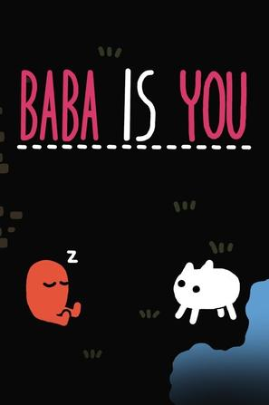
在玩 巴巴是你 Baba Is You ★★★★★
steam晚买享折扣, 游戏设计的真是秒啊!
2020-09-23 16:59:33
豆瓣原页
想看 续命之徒：绝命毒师电影 / El Camino: A Breaking Bad Movie
2020-09-22 21:50:56
豆瓣原页
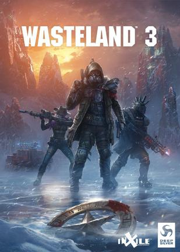
在玩 废土3 Wasteland 3
xgpu启动
2020-09-18 17:25:03
豆瓣原页
转发 信条 / Tenet
2020-09-18 15:58:04
豆瓣原页
 想看 沙丘 / Dune
想看 沙丘 / Dune
2020-09-17 21:38:44
豆瓣原页
转发 信条 / Tenet
2020-09-15 15:41:36
豆瓣原页
看过 信条 / Tenet ★★★★★
看完了，没看懂！！！英文词汇难懂不说，逻辑少一环就看不懂了。。回家看看枪版中文字幕。。再看解析
2020-09-15 13:02:27
豆瓣原页
想看 黑袍纠察队 第一季 / The Boys Season 1
2020-09-13 22:19:42
豆瓣原页
看过 花木兰 / Mulan ★★★★★
卧槽，好燃啊！从头燃到尾！完全不疲惫，打戏很精彩，剧情和98年动画版剧情不一样，但是我喜欢这个剧情，虽然感觉烂尾了 =，= 主题曲Reflection好熟悉。。。查了下是98年的！延续了迪士尼22年前的作品，真棒啊
2020-09-12 23:46:18
豆瓣原页
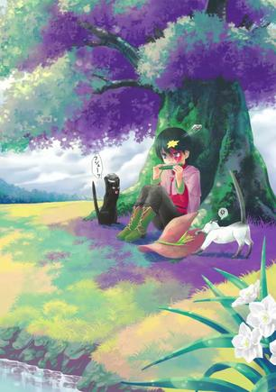
想玩 伊洛纳 Elona
2020-09-12 22:54:54
豆瓣原页
看过 风骚律师 第五季 / Better Call Saul Season 5 ★★★★★
感觉后面至少还有两季，但是演员已经老很多了 =。=
2020-09-12 22:54:26
豆瓣原页
想看 风骚律师 第六季 / Better Call Saul Season 6
2020-09-09 21:29:30
豆瓣原页
在看 风骚律师 第五季 / Better Call Saul Season 5
Saul Goodman is born
2020-09-09 21:29:06
豆瓣原页
看过 风骚律师 第四季 / Better Call Saul Season 4 ★★★★★
感觉这季叫 Better Call Mike/Fring
2020-09-08 11:40:49
豆瓣原页
在看 风骚律师 第四季 / Better Call Saul Season 4
2020-09-08 11:40:21
豆瓣原页
看过 风骚律师 第三季 / Better Call Saul Season 3 ★★★★★
不得不说，Chulk之死我还是很开心的。。。养老院风波之后，其实Jimmy也有做不到的事情。因为良知，亲手毁了自己打下的江山，真是命途多舛。
2020-09-06 12:29:44
豆瓣原页
在看 风骚律师 第三季 / Better Call Saul Season 3
2020-09-06 12:29:11
豆瓣原页
看过 风骚律师 第二季 / Better Call Saul Season 2 ★★★★★
有犯罪了这季。不得不说这个哥哥真的是坑弟，虽然他们的母亲也是有点太偏袒弟弟了。Mike常去的咖啡店背景音乐是Floyd Cramer的Last Date，好听。Mike的儿媳妇 hmmm 不知道怎么说，也不知道她父母情况。总之期待下一季
2020-09-05 20:13:36
豆瓣原页
在看 风骚律师 第二季 / Better Call Saul Season 2
2020-09-05 20:12:25
豆瓣原页
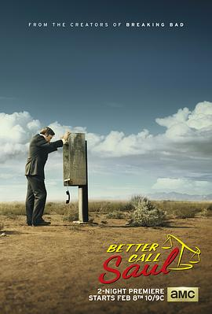
看过 风骚律师 第一季 / Better Call Saul Season 1 ★★★★★
虽然这一季还没有说为啥变成了Soul Goodman，但是至少知道了Soul Goodman意思是s’all Good, man (it’s all good, man)，笑炸，排绝命毒师的时候就想到了这一点嘛！很精彩的律师奋斗故事 hhh 下一季估计就要开始犯罪了
2020-09-05 15:50:38
豆瓣原页
想看 信条 / Tenet
2020-09-04 21:07:18
豆瓣原页
在看 风骚律师 第一季 / Better Call Saul Season 1
Breaking bad的前传，准备继续追
2020-09-04 21:06:40
豆瓣原页
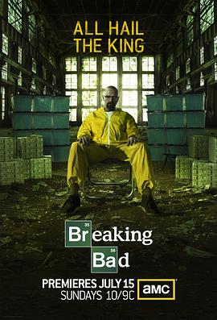
看过 绝命毒师 第五季 / Breaking Bad Season 5 ★★★★★
完结了。这一季真是又爱又恨，这样的结局可能是最好的一种了。不过中间看得一度想差评，家人怎么就这么不配合，睁一只眼闭一只眼不是相安无事？非也，法治社会姑息即是共犯。看着Mr. White一步错步步错，真是心绞痛，曾今的好伙伴一个一个被自己消灭 =。= 剧里主要角色刻画的都很到位。Mike我是真想吐槽，太像成龙了！每季都不一样的douchebags倒是一直很让人讨厌。只能说 Good ending！
2020-09-04 08:55:43
豆瓣原页
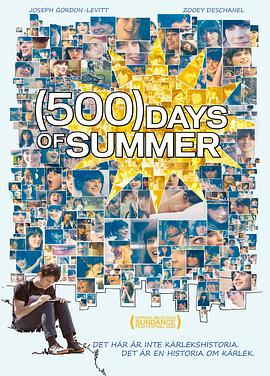
想看 和莎莫的500天 / (500) Days of Summer
2020-09-02 21:04:10
豆瓣原页
看过 釜山行2：半岛 / 부산행2-반도 ★★☆☆☆
《速度与激情·半岛》。完全就跟第一部没啥类似的地方，剧情拖沓、老套。只能怪我期待值过高。大体3分，因为有第一部名声在前，减一分以儆效尤（？）
2020-08-31 20:39:38
豆瓣原页
在看 绝命毒师 第五季 / Breaking Bad Season 5
2020-08-30 23:06:32
豆瓣原页
玩过 超级幸运狐 Super Lucky’s Tale ★★★★☆
挺有意思的休闲游戏，就是视角卡的太难受了，总觉得把握不好前面的平台离我有多远
2020-08-30 22:33:23
豆瓣原页
玩过 刀剑神域：夺命凶弹 ソードアート・オンライン フェイタル・バレット ★★★☆☆
手感非常差，游戏粗糙程度可以说制作成本不及育碧年货的1/3，总之玩了几个小时玩不下去了，还好是game pass自带的
2020-08-30 22:19:24
豆瓣原页
看过 绝命毒师 第四季 / Breaking Bad Season 4 ★★★★★
精彩！怎么看都是完结篇，不知道第五季还有啥。话说回来这季结束感觉cook了那么多最后只得到了一个洗车店 =。=
2020-08-30 22:18:49
豆瓣原页
想看 绝命毒师 第五季 / Breaking Bad Season 5
2020-08-29 22:50:21
豆瓣原页
玩过 Sky光·遇 Sky: Children of the Light ★★★☆☆
ps游戏本身还是很不错的，就是移植到手机之后氪金要素增加了，游戏体验也差了很多
2020-08-29 16:54:00
豆瓣原页
在看 绝命毒师 第四季 / Breaking Bad Season 4
2020-08-29 15:39:38
豆瓣原页
想看 绝命毒师 第四季 / Breaking Bad Season 4
2020-08-29 15:39:24
豆瓣原页
看过 绝命毒师 第三季 / Breaking Bad Season 3 ★★★★★
太惨了, 一步错步步错
2020-08-28 16:42:43
豆瓣原页
想看 间谍之桥 / Bridge of Spies
2020-08-27 21:46:10
豆瓣原页
在看 绝命毒师 第三季 / Breaking Bad Season 3
2020-08-23 18:48:54
豆瓣原页
想看 绝命毒师 第三季 / Breaking Bad Season 3
2020-08-23 18:48:35
豆瓣原页
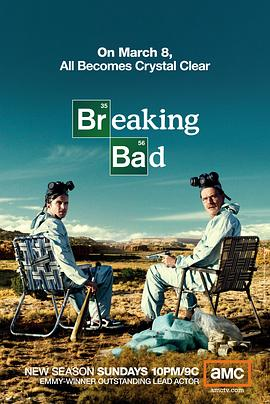
看过 绝命毒师 第二季 / Breaking Bad Season 2 ★★★★★
上上周复习了第一季, 第二季精彩啊! 越来越接近 Narcos的剧情了, 毒贩链顶端是个体面的人物, 便于洗钱…
2020-08-23 09:38:09
豆瓣原页
听过 离人愁 ★☆☆☆☆
抄袭烟花易冷、清明雨上、山外小楼夜听雨实锤，难怪第一感觉这么好听，因为原曲都很好听
2020-08-23 09:35:18
豆瓣原页
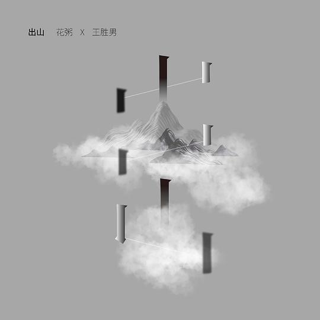
听过 出山 ★☆☆☆☆
抄的super love实锤
2020-08-22 00:49:18
豆瓣原页
 在玩 糖豆人: 终极淘汰赛 Fall Guys: Ultimate Knockout ★★★★★
在玩 糖豆人: 终极淘汰赛 Fall Guys: Ultimate Knockout ★★★★★
ps+免费领取，又是一个现象级的游戏，把疫情期间无法举行的跑酷类线下活动搬到游戏世界里了，总共一个摇杆+3个键，难得见到的简单游戏
2020-08-17 12:30:36
豆瓣原页
想看 好莱坞往事 / Once Upon a Time… in Hollywood
那必须是Margaret Qualley圈粉的, 死搁里的mama
2020-08-17 00:59:59
豆瓣原页
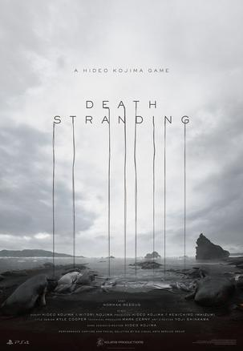
玩过 死亡搁浅 DEATH STRANDING
14章结束，很棒的游戏。Hideo的脑回路真的迷，竟然能把送快递做的这么好玩。剧情叙述也是很厉害，一点一点拨开真相，直到最后一秒都还保持着神秘性。音乐也很带感，看到城市的一霎那音乐响起，长舒一口气。
2020-08-16 10:43:46
豆瓣原页
想看 湮灭 / Annihilation
2020-08-15 15:05:33
豆瓣原页
看过 X战警：黑凤凰 / Dark Phoenix ★★★★☆
又是一部标准的CG秀技能电影, 不同的是观影的人, 我发现一说话我就能听出来谁是哪的口音了, x教授的新西兰口音特别特别重 然后Jean的美音也是特别重! 如果Google “james mcavoy kiwi accent” 或者 “Sophie Turner american accent”, 能出来一大波结果hhhh 虽然他们都不是这俩地方的人… 不过我不是一个人!
2020-08-10 19:40:31
豆瓣原页
想玩 Angel Beats! -1st beat-
ATF汉化组汉化了5年还没汉化完，交给我俩日语白学作都汉化完了。mark用英文补丁
2020-08-08 18:51:25
豆瓣原页
想看 西部世界 第三季 / Westworld Season 3
2020-08-08 18:51:04
豆瓣原页
 看过 西部世界 第二季 / Westworld Season 2 ★★★★★
看过 西部世界 第二季 / Westworld Season 2 ★★★★★
18年7月下的, 文件躺硬盘里2年了, 终于看完. 很精彩, 人工智能终于混入人群了, 期待第三部的内容.
2020-08-08 17:25:34
豆瓣原页
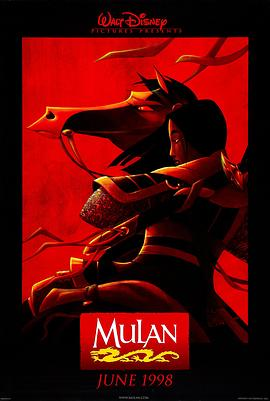
看过 花木兰 / Mulan ★★★★★
小学的时候我爸搞来了这个电影的VCD, 真的是做的太好了, 有同期(?)的宝莲灯做对比, 实在是太爱这个动画了, 在那个互联网不发达的年代这个vcd看了无数遍
2020-08-08 17:05:27
豆瓣原页
 想看 勇敢传说 / Brave
想看 勇敢传说 / Brave
主题曲Brave 圈粉
2020-08-08 14:09:34
豆瓣原页
看过 远程遇害 谋杀内幕篇 / リモートで殺される 殺人の裏側編 ★★☆☆☆
解密篇才是应该发布的版本吧… 非要剪出来一个莫名其妙的片子… 本来正片结尾剪一个解密版本就行了, 非要把夹在正片里面, 所以我是5倍速看完的. 看完之后感觉很多秘密还是没有解开… 服了
2020-08-08 14:07:42
豆瓣原页
看过 远程遇害 / リモートで殺される ★★★☆☆
形式比较新颖, 但是剧情还是挺无聊的 =.=
2020-08-07 11:38:05
豆瓣原页
想看 毒枭：墨西哥 第一季 / Narcos: Mexico Season 1
墨西哥观望
2020-08-07 11:37:25
豆瓣原页
 在看 毒枭 第三季 / Narcos Season 3
在看 毒枭 第三季 / Narcos Season 3
很难想象哥伦比亚曾经有这么动乱。。同学去波哥大留学也是挺传奇的了
2020-08-07 11:11:41
豆瓣原页
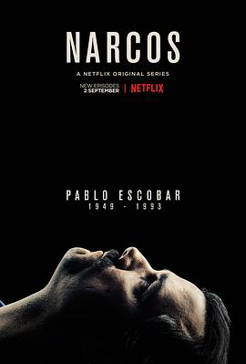
看过 毒枭 第二季 / Narcos Season 2 ★★★★★
终于抓到艾斯卡巴·帕波了。他看起来是个普通人，但是确实是个杀人犯。
2020-08-04 08:09:45
豆瓣原页
想看 PlayStation变革史 / From Bedrooms To Billions: The PlayStation Revolution
2020-08-03 18:36:48
豆瓣原页
想看 釜山行2：半岛 / 부산행2-반도
换演员了? 口碑不行但是还是好奇
2020-08-02 09:39:22
豆瓣原页
在玩 死亡搁浅 DEATH STRANDING
2020-08-01 19:46:37
豆瓣原页
想看 毒枭 第二季 / Narcos Season 2
2020-08-01 19:44:53
豆瓣原页
 看过 毒枭 第一季 / Narcos Season 1 ★★★★★
看过 毒枭 第一季 / Narcos Season 1 ★★★★★
精彩的贩毒集团顶部斗争, 之前看了一堆毒骡在机场被抓简直就像是在小公司工作, 用户QPS只有两位数, 在顶部集团就类似于在大公司, QPS最少也是6位数 hhhh 过瘾
2020-07-31 23:09:48
豆瓣原页
看过 蜘蛛侠：英雄远征 / Spider-Man: Far from Home ★★★★☆
这是一部被进度条无限剧透的电影, 梗有点多以至于我还得查查 =.= 总体来说还不错, 特效啥的很过瘾
2020-07-31 20:42:13
豆瓣原页
看过 极限逃生 / 엑시트 ★★★★☆
攀岩运动宣传片. 片尾疯狂暗示把我逗笑了 hhhh
2020-07-31 13:07:41
豆瓣原页
玩过 七日 7Days ★★★★★
用Play Pass玩的，感觉很新颖，总共4个结局，很顺利地一周目打到GE。
2020-07-29 22:46:35
豆瓣原页
在看 最危险游戏 第一季 / Most Dangerous Game Season 1
2020-07-26 22:57:52
豆瓣原页
想看 误杀
2020-07-25 19:17:44
豆瓣原页
看过 大赢家 ★★★☆☆
国内能看到反派获胜的电影也只有在演习里了吧 hhh 非常的"正能量" + zzzq…
2020-07-25 17:38:32
豆瓣原页
看过 十二个想死的孩子 / 十二人の死にたい子どもたち ★★★☆☆
实在是… 中途睡着了… 苯环这次一个颜艺也没有, 简直是来客串的吧
2020-07-25 15:33:45
豆瓣原页
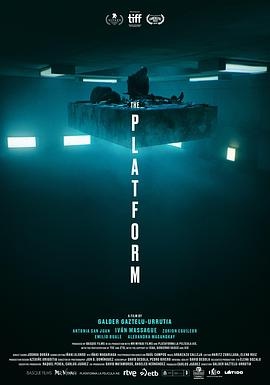
看过 饥饿站台 / El hoyo ★★★★☆
我很想知道第0层和334层是什么东西啊 =.=
2020-07-24 21:52:48
豆瓣原页
 玩过 尼尔：机械纪元 NieR:Automata ★★★★★
玩过 尼尔：机械纪元 NieR:Automata ★★★★★
2017-03-11预购的，由于种种原因（主要是电脑带不起来）没有通关。为了这个游戏，我买了steam手柄，视频通关了第一作（因为没有ps3所以视频通关）。然后当我看到xbox game pass包含这部作品的时候我知道我终于可以通关了！游戏三周目的流程设计非常精彩，战斗打击感也很棒，就是有点难。结局毫不犹豫捐献了存档，感谢一路上帮助过我的陌生人：） 完结撒花！
2020-07-23 21:10:01
豆瓣原页
看过 我是大哥大 SP / 今日から俺は!!SP ★★★☆☆
有点水，感觉给剧场版造势的，中间全员笑场也没重拍😐
2020-07-22 08:57:07
豆瓣原页
 玩过 斯普拉遁 2 Splatoon 2 ★★★★☆
玩过 斯普拉遁 2 Splatoon 2 ★★★★☆
操作方式我真是太喜欢了，可惜fps永远的手残，弃坑
2020-07-22 08:46:28
豆瓣原页
 玩过 最后生还者 第二部 The Last of Us Part II ★★★★★
玩过 最后生还者 第二部 The Last of Us Part II ★★★★★
这个是我亲自用PS4玩完的第一个游戏。
中途怒喊fk 4次，第一次是Ellie被Abby拿枪指着，第二次是Abby拿枪指着Ellie，第三次是Ellie拿起书包重启旅程，第四次是Ellie继续搞Abby。每次喊fk的时候都想让我弃坑了，但是还是坚持玩下去了。
游戏设计很合理，紧张一段时间之后能缓一段时间，不用过于担心弹尽粮绝。气氛塑造简直了，Rat King（本作唯一boss）那一段太吓人了，浑身鸡皮疙瘩，硬是死了10次。我一定要给这个游戏加上个惊悚的标签。
剧情没那么差，说剧情差的大多没有亲身体验这个游戏。前半剧情是有点吃惊，但时候后半剧情解释了前面的所有。略惋惜的就是末世中，两个杀“父”仇人之间的恩怨全部是队友领便当。
这游戏后劲是有点大，结尾Joel和Ellie的歌声点题，赞！
2020-07-21 19:29:44
豆瓣原页
看过 暗黑 第三季 / Dark Season 3 ★★★★☆
感觉三部得连起来看，不然脑子会炸会懵逼。大团圆结局很满意，脑洞很满意，时间跳来跳去本可以展现得更好
2020-07-19 09:18:36
豆瓣原页
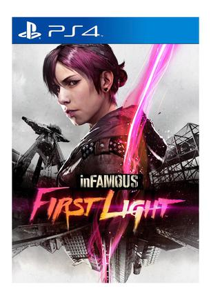
玩过 恶名昭彰：破晓 inFamous: First Light
2020-07-19 09:18:23
豆瓣原页
想玩 恶名昭彰：次子 inFamous: Second Son
对马岛开发商开发的，mark
2020-07-18 15:01:07
豆瓣原页
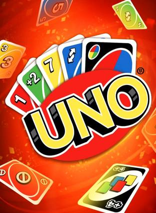
玩过 UNO® ★★★★★
玩游戏玩到了返璞归真的阶段
2020-07-18 09:47:47
豆瓣原页
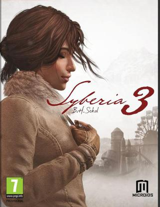
想玩 塞伯利亚之谜3 Syberia 3
1折买票
2020-07-18 09:47:21
豆瓣原页
玩过 1937特种兵 ★★★★☆
小学时候玩的，今天看Gamkr的盟军敢死队视频提到了这个作品，又勾起另外一波回忆，看了些gameplay的视频，想起来当时我第一关就卡住了，那两个机枪兵死活过不去（原来是从小就手残
2020-07-17 19:50:08
豆瓣原页
在玩 对马岛之魂 Ghost of Tsushima
入手澳实体，不过先借人玩了hhh 美末还没打完阿西。。。有点吓人
2020-07-17 19:49:23
豆瓣原页
玩过 超猎都市 Hyper Scape ★★★★☆
一如既往地手残，不过这个游戏TTK比valorant好多了，所以分数给高些，枪械手感一般
2020-07-12 16:31:53
豆瓣原页
看过 速度与激情：特别行动 / Fast & Furious Presents: Hobbs & Shaw ★★★★☆
飙车元素弱化了一些, 不过还是很精彩! 就比较有意思的是这个女主咋啥间谍片都有她的影子LOL
2020-07-11 13:46:46
豆瓣原页
想玩 对马岛之魂 Ghost of Tsushima
感觉是呼之欲出的日本刺客信条, 可狂战可潜入. 纠结港版还是澳实体
2020-07-06 12:26:45
豆瓣原页
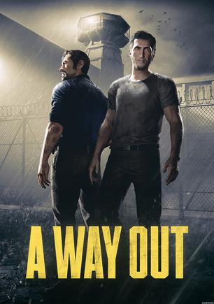
玩过 逃出生天 A Way Out ★★★★★
看的纯黑和琉璃玩的b站版本（和直播版本不一样）。很棒的游戏，设计很新颖很好玩。结局有点太虐了，很难缓过来，铺垫这么久等来这样的结局，真的接受不能，制作组不能弄3个结局其中一个是大团圆真结局么？虽然最后幸存的人都留了对方的胡子，但是还是虐。。
2020-07-04 17:39:51
豆瓣原页
看过 加密货币 / Crypto ★★★★☆
难道是我很久没有看这种类型的电影的原因吗？感觉评价跟跟豆瓣均分大相径庭。这个电影不难看，也不好看，可能我本身就对金融和计算机都感兴趣吧。题目起得还ok，不过跟加密货币关系不大，整部电影只有~10分钟在说加密货币？不过有些行业就是容易惹来杀身之祸 hmmm
2020-07-02 22:39:08
豆瓣原页
想看 我是大哥大 SP / 今日から俺は!!SP
2020-07-02 11:26:37
豆瓣原页
 在玩 盗贼之海 Sea of Thieves
在玩 盗贼之海 Sea of Thieves
跟小伙伴一起玩
2020-07-01 16:38:13
豆瓣原页
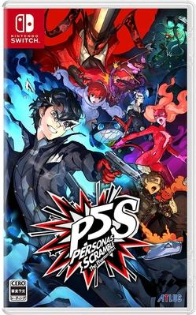
想玩 女神异闻录5 乱战 魅影攻手 ペルソナ5 スクランブル ザ・ファントムストライカーズ
2020-07-01 16:33:55
豆瓣原页
在看 暗黑 第三季 / Dark Season 3
2020-07-01 16:33:24
豆瓣原页
在玩 最后生还者 第二部 The Last of Us Part II
上周接了个ps4，开始玩。。。这部评分是真的有点低